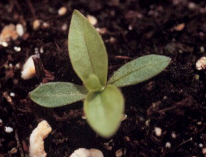
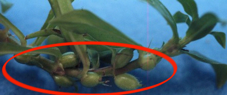
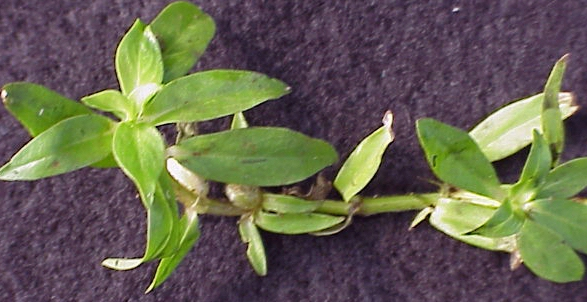

Virginia Buttonweed ( Diodia virginiana)



Virginia buttonweed grows in trails along the aground. The leaves are elliptical to lanceolate, and can grow to be around 1 to 2 inches long to around 1 inch wide. If infected with a common virus, the normally green leaves can have a yellow mottling.